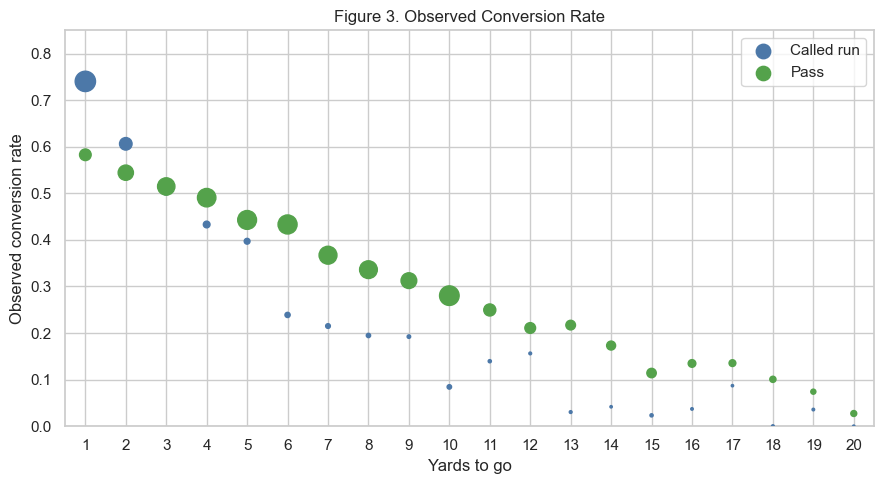
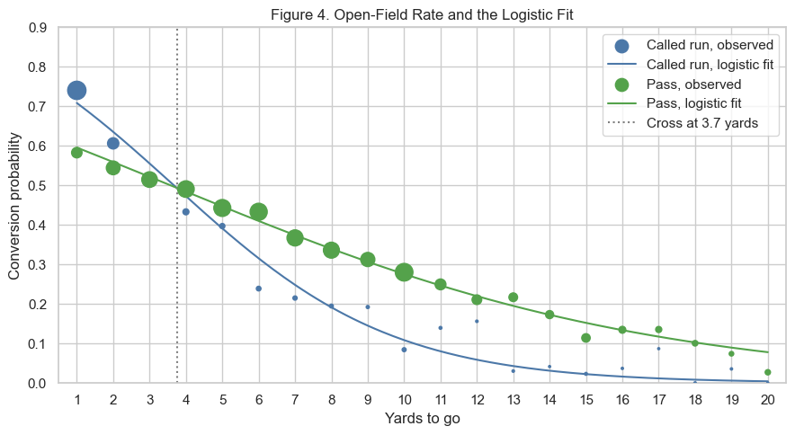
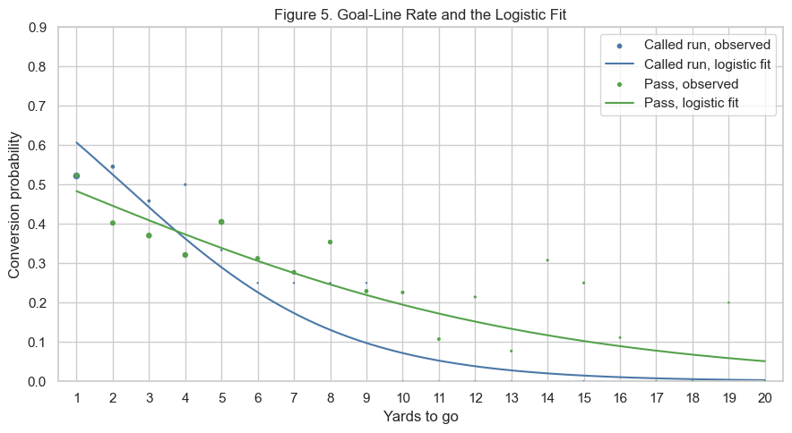

39.69%
overall conversion rate, 8,712 of 21,948 plays
University of San Diego · AAI 500 · Professor Leonid Shpaner
In football, third down is often the offense’s last chance to keep the drive going. A conversion continues the drive. A failure means a punt, a field goal, or a fourth-down decision. That is why we treated it as the situation for asking which factors are associated with offensive success.
39.69%
overall conversion rate, 8,712 of 21,948 plays
63% → 15%
from 1–2 yards to go down to 11 or more
3.7 yd
where the open-field run and pass curves cross
We used the NFLverse play-by-play data from the 2023–2026 seasons. We looked at information available before each play: yards to go, play type, field position, quarter, and score differential. Our objectives were to identify which of those pre-play factors were associated with a successful third-down conversion, and to evaluate how accurately they predict the probability of success.
The 2023, 2024, and 2025 files are complete seasons. The 2026 file only includes Weeks 1 through 3. The first part of the work is how we prepared the data and what the exploration showed. The second part is the model we kept, and the limits on how that model should be read.
We combined the four seasons into one table before filtering. That table had 156,084 plays and 372 variables, one row per play, and no duplicated rows. Filtering to third down left 25,422 plays. The target, third_down_converted, was missing on 41 of them. All 41 were no-play penalty events, so we removed them.
Of the remaining third downs, 24,344 were regular season and 1,078 were postseason. We kept the regular season because it gave us a larger and more consistent sample. Restricting further to run and pass attempts with a recorded outcome left 21,948 plays.
A lot of the original columns describe what happened after the snap, including yards gained. We left those out. The point was to estimate conversion success from information available before or at the beginning of the play. Using something that becomes known after the play would hand the analysis information that is not available when the play is called.
We kept sixteen variables for the exploration: game and play identifiers, season, week, offensive and defensive teams, quarter, time remaining, field position, yards to go, play type, the third-down outcome, remaining timeouts, score differential, and shotgun formation. After that selection there were no missing values and no duplicate plays.
NFLverse classifies quarterback scrambles as runs. We kept that label for the exploratory comparison. For the model we coded those 1,037 scrambles as passes, because a scramble begins as a designed pass before the quarterback leaves the pocket. A run in the model is a called run.
Of the 21,948 plays, 8,712 converted and 13,236 did not. The overall rate is 39.69%. Most third downs in this dataset were not converted.
The rate was fairly consistent across seasons: 39.05% in 2023, 39.95% in 2024, 39.85% in 2025, and 41.22% in the partial 2026 season. Because 2026 is only three weeks, comparisons with the completed seasons should be read cautiously.
Runs converted 53.34% of the time and passes 35.14%. That difference does not mean that calling a run causes a higher chance of success. Teams are more likely to run when they need a few yards and more likely to pass when the distance is long, so part of the gap is the yards needed rather than the play type alone. In the exploratory labels, scrambles are still inside the run category.
Yards to go had the clearest relationship with success. Plays needing one or two yards converted 63.38% of the time. The rate fell to 47.21% at three to five yards, 33.69% at six to ten, and 15.07% at eleven or more. Most of these plays are ten yards or shorter, and conversion becomes less likely as the required distance increases.
Quarter, field position, and score differential moved the rate less. Field position ranged from 30.93% on the offense’s own 1- to 20-yard line to 41.16% between the opponent’s 21- and 50-yard lines. Score situations ranged from 38.36% when trailing by nine or more to 41.13% when the game was tied. Regulation quarters were close as well, 41.45% in the first and 37.93% in the fourth. Overtime was 40.57% on only 106 plays.
Yards to go had the strongest relationship with conversion success. Play type mattered too, but its relationship with success depended on the yards required. Season, quarter, field position, and score showed smaller differences. Those findings are what we used to choose the predictors in the model.
Each play is a conversion or a failure. The exploration showed that the rate falls with yards to go, that the run-versus-pass comparison changes with that distance, and that everything else does not move the rate much. We compared three models that can return a probability from the same three predictors: yards to go, called run versus pass, and goal-to-go. We fit them on the 20,769 regular-season plays from 2023 through 2025 and held out 2026.
A straight line fit to the 0/1 outcome is easy to read, but it does not stay inside 0 and 1. On the estimation sample it left that interval on 501 plays, and at 20 yards the called-run line was negative. An identity-link binomial model stayed inside 0 and 1, but it missed the shape. The observed rates fall quickly at short distances and then level off. At one yard it gave 0.61 for a called run against an observed 0.74, and at 20 yards it was still around 0.23 to 0.28 against observed rates near zero.
We chose logistic regression because every fitted probability stayed between 0 and 1, the curve follows the decline in the observed rates, and the tail was reasonable. At one yard the logistic probabilities were 0.71 and 0.60, close to the observed 0.74 and 0.58. At 20 yards they were 0.00 and 0.08. AIC cannot rank these three, because the linear model and the logistic model do not share a likelihood.
The probability is the straight line. On the 20,769 plays, 501 fitted values fall below 0. The highest prediction is 0.66, under the 0.74 rate for an open-field called run on 3rd-and-1. At 20 yards the called-run line is negative.
The probability is still that straight line, with binomial variance. Only 4 fitted values leave 0 to 1. At 1 yard it gives 0.61 and 0.45, against observed rates of 0.74 and 0.58. At 20 yards it is still near 0.23 to 0.28, against 0.00 and 0.03.
The straight line is on the log-odds. No fitted value on those 20,769 plays leaves 0 to 1. At 1 yard the chances are 0.71 and 0.60. At 20 yards they are 0.00 and 0.08. It is the binomial model whose chance stays between 0 and 1 and follows the drop in the rates.
Give the model the down and it returns a conversion chance. It takes three things: yards to go, whether the call is a called run or a pass, and whether that first down is the goal line. A scramble is a pass, not a run. One more yard multiplies a pass’s odds by 0.86. Goal-to-go multiplies the odds by 0.635. The number that comes back is the chance that this third down converts, for the call that is on the field.



The two calls cross before any line is drawn. Called runs sit above passes at 1 and 2 yards. From 4 yards on, the pass rate is higher. The fit puts the meeting point at 3.7 yards.
| Situation | Called run | Pass | What changes |
|---|---|---|---|
| Open-field 3rd-and-1 | 0.71 | 0.60 | Run is higher by 0.11 |
| Open-field 3rd-and-3 | 0.56 | 0.52 | Still a run, barely |
| Open-field 3rd-and-4 | 0.47 | 0.48 | The lead flips between 3 and 4 |
| Open-field 3rd-and-10 | 0.11 | 0.28 | Pass is higher by 0.17 |
| Goal-line 3rd-and-1 | 0.61 | 0.48 | Same split, both chances lower |
The cross stays at 3.7 yards on the goal line, because goal-to-go multiplies both odds by 0.635. A 3rd-and-1 called run falls from 0.71 to 0.61.
On the 1,179 plays in the 2026 holdout, the model expects a conversion rate of 0.393 and the observed rate is 0.412. That checks the overall level after three new weeks. It is too small a sample, and too thin once it is split by distance and call, to refit the line or to rank teams.
Before the snap, read the chance for this distance and this call, then compare the two calls. Inside about 4 yards, expect the called run. Past 4 yards, expect the pass. On the goal line both chances fall. A scramble is not evidence for the run, because those plays are coded as passes.
The limit on that reading is the one we kept coming back to in the deck. This is the chance for the call on the field. It is not the effect of forcing the other call. 0.71 against 0.60 is the difference between the called runs that were used on 3rd-and-1 and the passes that were used there. Those calls also depend on the defensive formation and how that defense has been playing. Plays from the same game are dependent, and the reported standard errors treat them as independent, so those standard errors are somewhat too small. The gaps at 1 yard and at 10 yards are wide enough that a slightly larger error would leave them in place. Near 4 yards, where the two chances are close, the same change would not.
Three things would make the next version stronger. Standard errors by game, to recheck the gap at 1 yard and the reversal at 10. The look that chose the call: formation is already in the file, and how that defense had been playing is not in this model. A full 2026 season, so the line is refit only after the year is complete. Three weeks cannot rank teams.